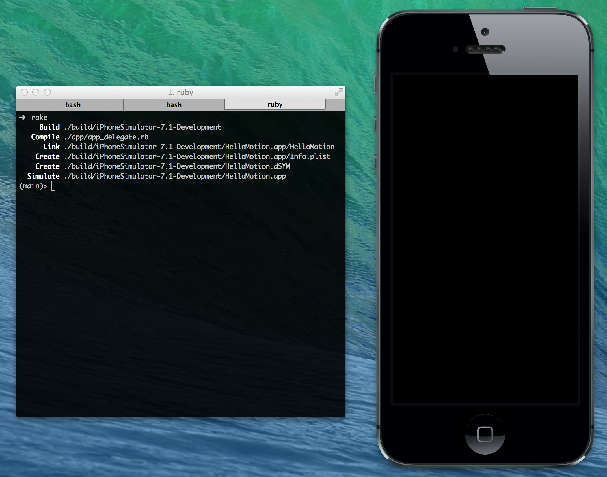
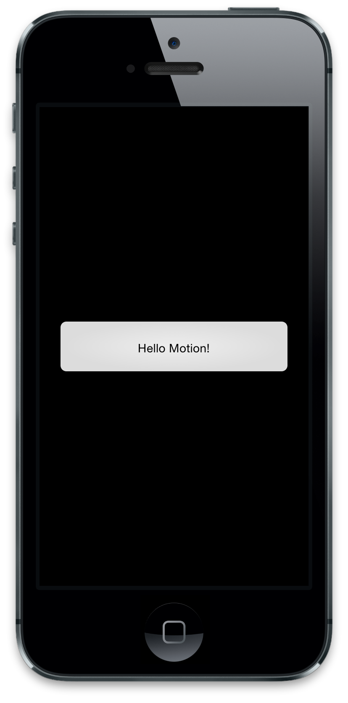

Hello Motion
Installation
RubyMotion is a commercial product from HipByte, a company founded by the incredible guys responsible for MacRuby. When you purchase a license to RubyMotion, you will receive a key and an installer app which will take care of everything. You also need to get Xcode from the Mac App Store. Xcode installs some developer tools RubyMotion relies on (such as the iOS Simulator), but you don't actually make RubyMotion projects inside the IDE.
Instead, RubyMotion relies on command-line tools and you're welcome to use any text editor of your choice. There are addons for many popular editors which help with things like code completion and build integration. RubyMotion also builds on top of existing Ruby tools like RubyGems and Rake, so if you're coming from a Ruby background you should feel right at home.
So once everything is installed, you're ready to take the dive. Read on!
The First App
Open your terminal and navigate to where you want to create your RubyMotion projects. Run:
motion create HelloMotion
The motion command is one half of the RubyMotion toolbox; it's equivalent to the rails command, if you're familiar with that. It handles managing projects and the RubyMotion tools themselves (from time to time, you may be reminded to run motion update).
motion create makes a HelloMotion folder and some files inside, so go ahead and cd into it (cd ./HelloMotion). You'll run all of the subsequent commands from this location, so definitely keep a terminal window/tab open to it.
We'll talk about just two of the files it creates: Rakefile and ./app/app_delegate.rb.
Rakefile is where you handle your app configuation (stuff like what the app's named, what resources to include, etc) and library imports (so 3rd-party gems or other local sources). It's used by the other half of the RubyMotion workflow, the rake command. As of RubyMotion 1.11, Rakefile will be generated to look like:
$:.unshift("/Library/RubyMotion/lib")
require 'motion/project'
Motion::Project::App.setup do |app|
# Use `rake config' to see complete project settings.
app.name = 'HelloMotion'
end
If you're not intimately familar with Ruby, the first thing you may think is, "Wait...$:.unshift who?" Strange-looking indeed. What this line does is tell Ruby, "When we use requires, also look in the '/Library/RubyMotion/lib' directory to find what we're requiring". 'motion/project' resides there, and without the initial $:.unshift nothing would be found!
So we require 'motion/project', which gives us proper access to RubyMotion and setting up our app in the .setup block. There are all sorts of properties for app, which as the auto-generated comment says can be listed using rake config. By default, RubyMotion sets the .name to our project's name, so that looks good.
Wait, why do we have a Rakefile at all? Well, RubyMotion uses rake for all of its functions, and the rake command runs the Rakefile in directory you run it in. The Rakefile is supposed to define the set of "tasks" which can be attached to rake (rake <task>), but these are actually created for us when we require "motion/project".
Give it a go! Run rake in your terminal and you should have a blank iPhone simulator pop up. Additionally, your terminal is now running an interactive console in which you can execute new code on the fly.

"Hooray!" you may exclaim...but how did that happen? How did we get from app.name = 'HelloMotion' to an iPhone popping up?
Turns out RubyMotion's App object has some sensible defaults, such as (most importantly) recursively including all Ruby files in ./app. Remember that app_delegate.rb I mentioned earlier? Turns out that guy got included when we compiled our app! Let's take a look:
class AppDelegate
def application(application, didFinishLaunchingWithOptions:launchOptions)
true
end
end
Hmm, all that did was define an AppDelegate class with one method. There's not even a superclass, how does this do anything?!
Well, run that rake config command real quick. It'll spit out a bunch of settings and information, but what we're interested in is this:
...
delegate_class : "AppDelegate"
...
Whoa buddy, there's our "unimportant" AppDelegate! RubyMotion actually looks for a class with the name we assign as delegate_class and uses that in launching our app. We could've called our class SuperAppDelegate and changed our Rakefile as such:
Motion::Project::App.setup do |app|
app.name = 'HelloMotion'
app.delegate_class = "SuperAppDelegate"
end
So...what is a delegate? In iOS-land, when the user launches our app the system sets up a bunch of stuff for us. We need to give the OS an object which can respond to different events during that process; we refer to that object as the "application delegate". It gets callbacks for when the app starts, ends, goes to the background, gets a push notification, all sorts of fun stuff.
In the motion generated code, we only implement def application(application, didFinishLaunchingWithOptions: launchOptions). It looks a little different than normal Ruby because of the didFinishLaunchingWithOptions label shoved in the middle...what's up with that? Well, time for a short history lesson.
In most languages, functions look like this: obj.makeBox(origin, size). This can be a bit of a pain because now you need to look up the implementation of that function and figure out what variables go where. Objective-C uses "named parameters" to solve this problem. In Objective-C, that same function looks like this: [obj makeBoxWithOrigin: origin andSize: size];. See how each variable directly proceeds the part of the function name which refers to it, removing ambiguity? Pretty clever. We refer to those functions by putting colons in place of variable names, like so: makeBoxWithOrigin:andSize:.
In Ruby, named arguments don't exist; it has traditional methods like obj.make_box(origin, size). RubyMotion decided to add named arguments to its implementation of Ruby so the original Apple APIs were compatible, like so: obj.makeBox(origin, andSize: size). That andSize isn't just sugar; it's a real part of the method name. obj.call_method(var1, withParam: var2) is totally different than obj.call_method(var1, withMagic: var2), despite their normal Ruby forms looking like obj.call_method.
Anyway, back to the main plot. application:didFinishLaunchingWithOptions: is called when the system finishes setting up the app and becomes ready for us to do our own setup:
def application(application, didFinishLaunchingWithOptions:launchOptions)
true
end
For now, just assume it will always return true. Some apps may want to use launchOptions to determine if the app should be started or not, but most of the time you won't do that.
Now we understand how our app boots up and have our entry point. Let's...do something? Change your application:didFinishLaunchingWithOptions: to look like:
def application(application, didFinishLaunchingWithOptions:launchOptions)
alert = UIAlertView.new
alert.message = "Hello Motion!"
alert.show
puts "Hello again!"
true
end
See what we added? First, those three lines about a UIAlertView. UIAlertViews are the blue popups you see sometimes while using iOS (logging in to the iTunes Store, pre-iOS5 push notifications, etc). We create one, give it a message, then show it.
Next, puts is your basic logging statement. You can pass it a normal string to print, or any normal object which you want to some information about.
Run rake again and...BAM, an unclosable blue popup! And in your terminal window, you should see "Hello again!" output in the console. Not a whole lot going on, but...at least now we know how it all got there.

What did we learn?
- Create RubyMotion apps with
motion create <ProjectName> - Configure your app and import libraries inside
Rakefile - Apps need a delegate, and RubyMotion needs you to set its value (or use the default) in the
Rakefile - App delegates use
application:didFinishLaunchingWithOptions:as the first entry point. - Run your app using
rakewhile inside the project directory.